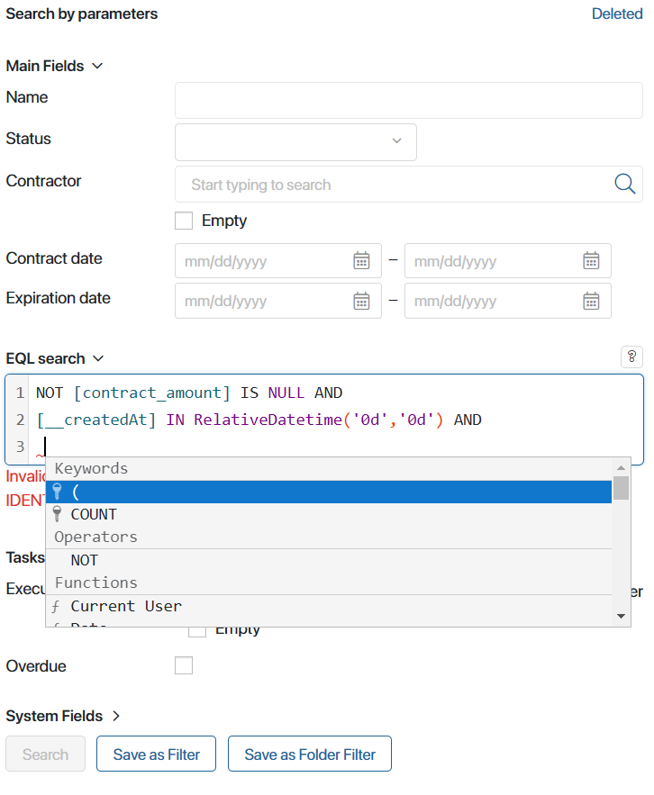

EQL365 (BRIX Query Language) is a language for querying data stored in the BRIX system. EQL queries are based on the developed syntax and extend the basic search capabilities. They allow you to create complex data selections based on specified parameters, taking into account several conditions.
You can assign specific values to the app properties, compare them with each other, or calculate the values using functions. To check several conditions in one query, you can use logical connectives—operators. For example, the search result can display all companies with orders for a certain amount and with contracts in a specified status.
Using EQL search
Search on the app page
You can use EQL search to find items in apps. To do this, click the icon in the search bar on the app page.
In the EQL search field, compose a query according to EQL365 syntax. To autocomplete the field, press the keyboard shortcut Ctrl + Space. In the drop-down list, there are:
- Variables of the current app.
- Keywords of the EQL365 language.
- Functions:
Datetime,Time,CurrentUser, etc. - Logical operators for combining multiple conditions:
AND,OR,NOT, etc.
In a complex query, each condition can be entered on a new line for easier reading and editing. To do this, use the Enter key.

After entering a query, click Search. You can also save the query as a filter to reuse.
Create queries in the EQL search widget
You can place the EQL search widget on app forms or pages. Any app of the system can be specified in its settings. Users will be able to compose queries and search by its parameters.
For example, on a separate page, you have created a chart tracking the most profitable orders of the company. Let’s add the EQL search widget to it and configure the search by the parameters of the Orders app. Users will be able to create complex data selections with many conditions, find certain items, and open their pages from the chart page.
Please note that searching for data using EQL queries can slow down the system if there is a large amount of data in the system. In such cases, we recommend using the search by parameters.
Data selections in Web API
EQL queries can be used in the Web API, for example, they can be added to the structure of a query to get lists of app items in the filter construction. Several EQL queries can be used.
When composing a query, the "eql" value is used for the description key. For the body of the query, the construction from the "query" subkey and the text of the selection condition are specified.
For example, for the Goods app, we get all items with a unit price (price variable code) equal to 400:
{
"filter": {
"eql":{
"query":"[price] = 400"
}
}
}
To test the composed query, go to the app settings, select the API item, and open the Item List tab.
For more information about Web API, see API in apps. The specifics of composing queries in the API language and their examples are described in Introduction to Web API.